Photogallery


THE KOROWAI DALAM – THE TREE PEOPLE (AFTER A GREAT SUCCESS OF THE PILOT EXPEDITION IT IS NOW OPEN TO EVERYBODY)
The expedition Korowai Dalam can be called only THE BEST OF THE BEST!!!
17–23 days – depends on the course of the trip PRICE: reasonable
2 or 3 weeks, estimated time is 2 weeks, however it is necessary to be time-flexible on this expedition. If everything goes well we can offer you an additional program for the remaining days. Eventually we can continue to the Kombai.
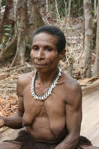
Photo©Petr Jahoda
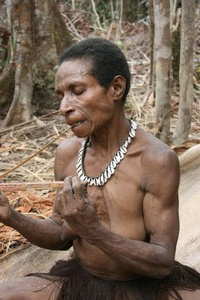
Photo©Petr Jahoda
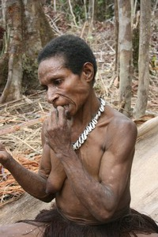
Photo©Petr Jahoda
MYSTERIOUS WARRIORS, BUT GREAT PEOPLE WHEN YOU GET TO KNOW THEM
There are many Tree people tribes living in Papua. I've visited 6 of them. Now I'd like to take you to the 6th one again, the wildest one of all. If you've been to the Korowai or Kombai, you've probably flew over the area. Yes, you could see those high tree houses on the way back quite a short time after the departure. That's the area behind the imaginary pacific line -the last such area even in Papua. As far as I know it is a place that has not been reached by any expedition untill 2009. The place is inaccessible for expeditions that are dependent on the carriers…
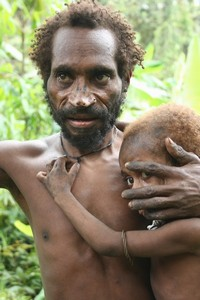
Photo©Petr Jahoda

Photo©Petr Jahoda
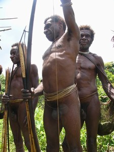
Photo©Petr Jahoda
The words above were my invitation to the first open expedition and I continued:
I and Ludek Uzel once made a trip to the Tree people. That time it was not to the Korowai and Kombai, but to the Korowai Batu. We were able to get to them, unfortunately we were not able to get deep into their area and we couldn't get to Korowai Dalam. Now we want to try it again – ourselves, without the carriers, because they will not go there anyway. They are scared of the Korowai Dalam as they think the Korowai Dalam would kill them and eat them. No Indonesian, no Papuan will go there – the Korowai Dalam might really kill them. We're convinced that there is no big risk for the white men. They might try to take away our equipment and things, however I'm not sure of that. I believe everything will be OK, otherwise I wouldn't take this trip.
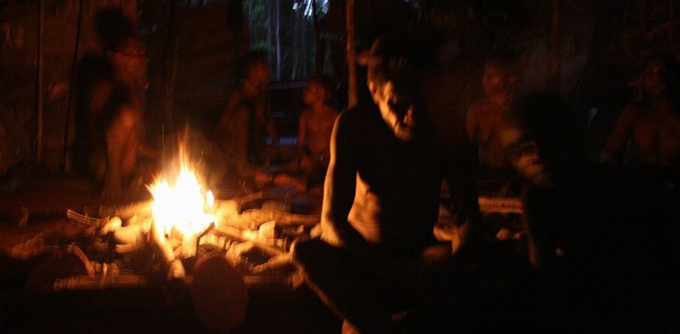
Photo©Petr Jahoda
I was right. We reached the Korowai Dalam first time in November 2009. We had to walk long hours, overcome snags, we despaired and hoped again, but in the end we got to the place where the Korowai Dalam lived. Yes, there were some villages where the people did not let us go in and we had to walk around them at a safe distance. Sometimes we were stopped far away from the village. But the places where we were able to come along with the inhabitants were fascinating. We could sleep in their houses, hunt with them, cook with them and join them at their meal. It was probably the best expedition I've ever experienced or one of the best… it's hard to make the choice… We're able to make this trip easier now, I hope. There were villages where people accepted us as friends and invited us to come again, so there should be not a big risk to go there as well as the interesting experiences are relatively certain. Even though we must be ready to carry all our equipment by ourselves, there won't be always a guide available there, you will have to rely on me.
So… Do you venture on such trip? After 11 years spent on expeditions I've chosen 11 friends and offered them to join me on the first expedition to the Korowai Dalam. It took us 1 year to have everything ready. In the end we went in 5. Only the best of the best. I would go anywhere with them. I know there are more people interested in this expedition and that's the reason I offer it to you now. I and 6 people is the maximum number in the team. Don't miss this chance, the whole world is changing and the Korowai Dalam too.
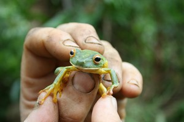
Photo©Petr Jahoda

Photo©Petr Jahoda
Expedition plan:
Term: 2015
1st – 2nd day: flight to Jakarta and Papua – Indonesia
3rd – day: arrangement of the permits required in Papua, sea bathing
4th –14th (or 20th) day: flight to the jungle by a hired plane – there are two possible destinations, from where we can start the expedition by physically demanding trekking through the area of the tree people. We might have carriers at the beginning of the trip, however as soon as we reach the area of the Korowai Dalam we'll probably have to carry all our stuff by ourselves. Therefore it is necessary to take only a minimal load. We'll sleep in the tents and hopefully also in the tree houses if we're able to approach the Korowai Dalam. On the average expedition I'm able to guarantee 1–2 days spent by watching the people working on sago palms using the primitive tools or getting the sago worms. We'll see the stone axes, arrowheads made from bones, bony or teeth necklaces, evening singing… As you all know, this always came true. BUT NOW I HOPE WE'LL SEE MUCH MORE THAN THAT!!!
15th-17th (or 23rd) day: flight to Jakarta, next day to the Czech Republic
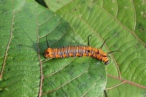
Photo©Petr Jahoda
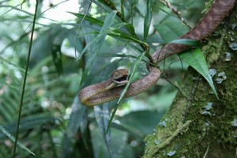
Photo©Petr Jahoda
In case the expedition to the Korowai Dalam is finished sooner than planned we offer you an optional plan: either to continue to the Kombai, app. USD 1800 or USD 2500 (depends on the way – trek or flight) or another program in Indonesia – you can also arrange it by yourself. We'll probably be able to finish the expedition within 14 days. If everything goes well, it is absolutely sufficient time. Actually it's not good to exceed the 2 weeks time as it could bother the tribesmen, which could cause the negative reaction from their side. The Korowai Dalam need to be treated sensitively and carefully…
You can find the pictures from these expeditions on www.PapuaTrekking.com The pictures from the last year expedition to the Korowai Dalam can be found in the section First contact. On photogalerry is short film from expedition too!
Price: on request.
Price includes: return ticket Jakarta – Papua, taxes included, 2× flight by a hired plane, eventual flight from Wamena to Jayapura, car hire in Wamena and Jayapura, accommodation in medium class hotels (while on trek we sleep in our tents or in the tree houses together with the tribesmen), all needed local transport, Czech, English and Indonesian speaking guide (Petr Jahoda), info materials. For you information only: the price of the regular Korowai and Kombai expedition (2 weeks) stays USD 6400 + the return tickets to Jakarta. In case you're interested in this expedition, please let us know and we'll provide you with more details.
Price doesn't include: visa to Indonesia (USD 25 at the Jakarta airport), return flight tickets Europe – Jakarta (app. USD 700 – 1300 including taxes), optional program, additional fees for attractions, photography, filming, entrance fee to the villages, sacred cave or mummy of Dani tribe, insurance, carriers, food, porters. Additional program or stay in case the expedition will be finished earlier than planned.
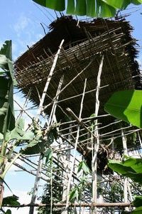
Photo©Petr Jahoda
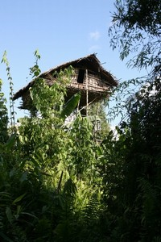
Photo©Petr Jahoda
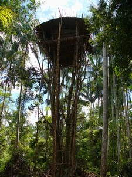
Photo©Petr Jahoda
What's good to know at the beginning
Dear Friends
You've chosen one of our most interesting expeditions on the western part of New Guinea – in Indonesian province Papua (previously Irian Jaya). The Tree people are the „piece de résistance“. They are one of the most interesting ethnics in Guinea. The trip to the Tree people is unforgettable and although I went through it several times already, it still brings me new experiences. There are still many things to discover, many occasions for taking pictures and filming. The Kombai – people wearing only the bones – are the well deserved pinnacle of the whole trek. The members of our Papua expeditions usually choose one of the two possibilities – something easier at the first part of the trip, then the Tree people or other way round. Most of the people want to come back to Papua even we cannot say there are easier or harder treks there. In spite of that we can say that the Tree people trek is an easier one though. Why? It's because I know the area very well, so we can choose the shortest and easiest way. We don't pretend to be explorers, we go to enjoy the trip and meet people living in another time.
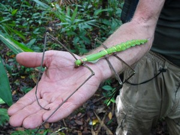
Photo©Petr Jahoda
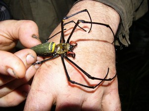
Photo©Petr Jahoda
I visit the Kombai since 1998. I also come to the Korowai for more than ten years. I go to the Korowai Dalam since 2009. Our travel agency was the only one worldwide that offers a trek to the Kombai and was always able to arrange it. Since 2003 we regularly combine treks to the Korowai and Kombai. Within last 3 years I've spent more than a year in Guinea in total. During that time I visited the Kombai seven times. With regards to this I know the area very well. I don't need to run around the forest to look for the place as I know where it is. I have friends among the Korowai and Kombai. The trek is not extremely difficult, but we cannot underestimate it.
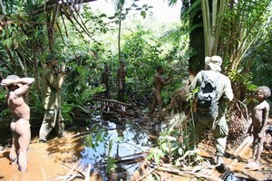
Photo©Petr Jahoda
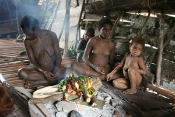
Photo©Petr Jahoda
You've chosen the expedition to the most interesting, but at the same time the most problematic area, where we go. The trek is not easy, however on the other hand also not the most difficult one in West Papua. The trek to the Yali or to Carstensz is definitely more difficult. Although the Tree people live mostly in the flat area, the level of the difficulty is medium in this case. There is no reason to be afraid of this trek, but it cannot be underestimated. Daily transfers usually don't exceed 4–5 hours, exceptionally it can be 6–8 hours and this is quite a lot with regards to the conditions in the rain forest. There can be several all-day transfers during a trek to the Korowai Dalam and it is possible we must carry all our equipment by ourselves. Please take this into the consideration while choosing the expedition to the Tree people.
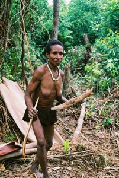
Photo©Petr Jahoda
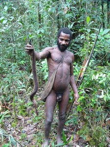
Photo©Petr Jahoda

Photo©Petr Jahoda
We try to spend as much time as possible with the inhabitants of the villages. If nothing unexpected happens we'll spend more nights in the villages – so there will also be some days with no transfer. We'll visit not only the Korowai tribe, but also the wildest Kombai. As mentioned above we go to this area since 1998, so we have lots of experiences. However not everything goes always well. Please remember that we go to see barbarian people and we cannot expect them to follow any rules that are regular for us. And the Korowai Dalam are even wilder than the Kombai.
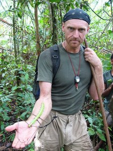
Photo©Petr Jahoda

Photo©Petr Jahoda
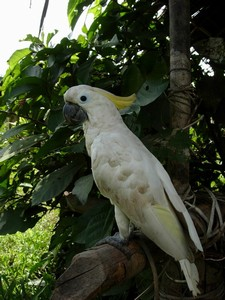
Photo©Petr Jahoda
Our expeditions were joined by women, too. One of them was in her 50's, one man was in his 60's. They had to put an extra effort, but they were able to manage it well. They definitely didn't hold the group in any respect. Please check our websites for more info about our expeditions on www.PapuaTrekking.com or on www.jahodapetr.cz.
Free Calendars 2015 for You
All the snaps in these three calendars were taken during two weeks of a standard expedition by one of our clients, Jerry Forejtek, a non-professional photographer.


Předchozí stránka: Home
Následující stránka: Expeditions